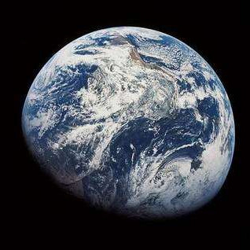

J'aimerais remonter le temps
J'aimerais remonter le temps
Revenir au début du monde
Quand le créateur tout puissant
Pétrissait la terre féconde
J’aimerais le voir composer
Tel un maestro son ouvrage
Et d’un trait métamorphoser
La glaise en divins paysages
J’aimerais le voir établir
Les forêts vierges foisonnantes
Et les grands fleuves pour nourrir
Cette vie neuve, ensorcelante
J’aimerais le voir dessiner
Les jolies couleurs de l’aurore
Et puis le soir enluminer
Le ciel de furtifs météores
J’aimerais le voir essaimer
De tournoyants vents à la ronde
Et voir les oiseaux sublimer
Leurs arabesques vagabondes
J’aimerais le voir agencer
La pluie, la foudre, les orages
Et puis le voir ordonnancer
Le boléro des fleurs sauvages
J’aimerais le voir assortir
Tous les animaux de la brousse
Et puis le voir les réunir
Tous ensemble à la même source
J’aimerais le voir assembler
Les monts, les lacs et les cascades
Et des volcans faire jongler
Le magma rouge qui s’évade
J’aimerais le voir ciseler
Les nuages et la blanche brume
Et le voir aussi fignoler
Des oiseaux la beauté des plumes
J’aimerais le voir façonner
Les océans et leurs rivages
Et pour joliment terminer
Poser la lune en éclairage
J’aimerais alors dire à Dieu
Pour que la terre reste belle
Qu’il doit évincer de ce lieu
L’homme méchant et infidèle
Je pourrais ainsi m’apaiser
Comme on peut le faire en un rêve
Peut être même éterniser
Cet espoir quand ma nuit s’achève
Renaud Maugey, le 29 août 2016